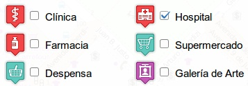
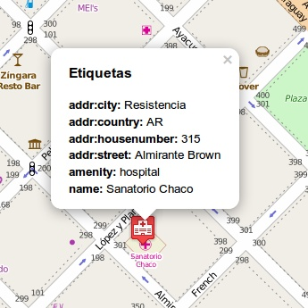
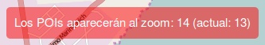
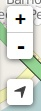
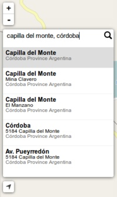
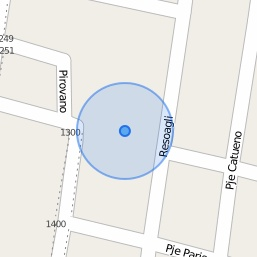

Elige los puntos que quieras visualizar en el mapa y luego cierra esta pestaña haciendo click en la X para una mejor visualización.
Esta web permite visualizar diferentes Puntos de Interés sobre un mapa. Los diferentes tipos de puntos pueden ser seleccionados desde la barra a la izquierda que se muestra al inicio (o bien haciendo click en "la casita"), pudiendo seleccionar varios a la vez.
Una vez seleccionados los puntos de interés, los mismos se mostrarán en el mapa luego de algunos segundos (dependiendo de la conexión a internet) con diferentes íconos y colores para una rápida visualización.
Si al seleccionar los POIs que quieres mostrar en el mapa, te aparece un mensaje como este:
Tenés que agrandar un poco más el mapa para que aparezcan los puntos.
A la izquierda están los controles para hacer agrandar y achicar el mapa (también funciona con la ruedita del mouse).
La "lupa" sirve para buscar una ciudad diferente a la que se está mostrando en el mapa, ingresando el nombre y la provincia de la misma. Por ejemplo, "capilla del monte, córdoba" y presionando Enter.
Además hay un ícono con una "flechita" que sirve para centrar el mapa en la posición en la que te encuentras actualmente.
¡Espero que te sea de utilidad!
Podés contactarte conmigo por email (o dejar un comentario) y comentarme qué tipo de punto de interés querés agregar así lo sumo a la lista.
Cuando necesites mostrarle el mismo mapa que vos estás viendo a otra persona, podés pasarle ese link y así compartir el mapa. Para eso, tenés que hacer click con el botón derecho del mouse en el texto Compartir este mapa (link) y luego "Copiar dirección de enlace" para guardarlo en el portapapeles.
Es probable que algunas etiquetas importantes se me hayan pasado y que estén faltando. Enviame un email o dejá un comentario en el sitio mecionando el POI en cuestión y lo resolveré a la brevedad.
Este es un sitio web que empecé para facilitar el acceso a la información mientras viajo con mi proyecto Argentina en Python, ya que cada vez que llego a una ciudad nueva necesito acceder a lugares como estaciones de servicio, hostels o campings, farmacias y demás lugares públicos.
Por lo tanto, este sitio me ayuda a recopilar fácilmente la información disponible en OSM a través de OverpassAPI y así tener una visión general de los POIs que existen en la ciudad a la que estoy llegando.
El código del proyecto lo podés encontrar en Github: aquí. Por favor, si encuentras algún error repórtalo en los issues o crea un pull request.
Si no sabés que es Github y querés hacer un comentario o sugerencia sobre este sitio web, me podés enviar un email o dejar un comentario en este sitio.
¡Muchas gracias!
humitos
-- http://elblogdehumitos.com.ar
Permite obtener una ruta seleccionando el punto de inicio y fin. Además, se le pueden agregar puntos intermedios.
Mapas listos para copiar en los dispositivos Garmin y obtener todo el poder de OSM en tu GPS.
Guía rápida en Español para aprender a utilizar OSM y todos sus beneficios en pocos pasos.
Agrega rápidamente tu negocio o POI favorito al mapa de OpenStreetMap. ¡Es rápido, fácil y no se necesita estar registrado!
¡Todo el poder de los mapas OSM en tu Android sin estar conectado a internet!.
Comunidad de Usuarios de OSM con locación en Argentina. ¡Sumate!
uMap te permite crear mapas con capas de OpenStreetMap en un minuto y embeberlo en tu sitio.
Este sitio está construido utilizando estas herramientas:
¡Gracias a todos ellos funciona este sitio web!
¡Dejá un comentario para nuestro website!
Este panel muestra la infomación necesaria para los desarrolladores del sitio o aquellos que quieran colaborar con el proyecto: agregando funcionalidad o reportando errores.
Para ver la información en este panel debes hacer click en alguno de los POIs que aparecen en el mapa luego de seleccionar algunos de la lista.
También puedes crear tu propia consulta utilizando OverpassAPI para buscar, por ejemplo, un POI que no esté en al lista marcando el siguiente checkbox.